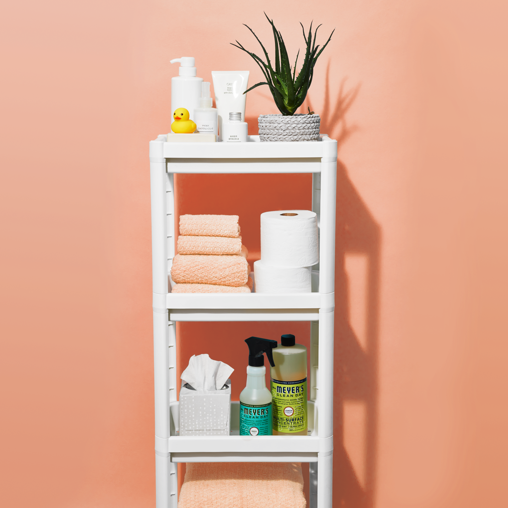
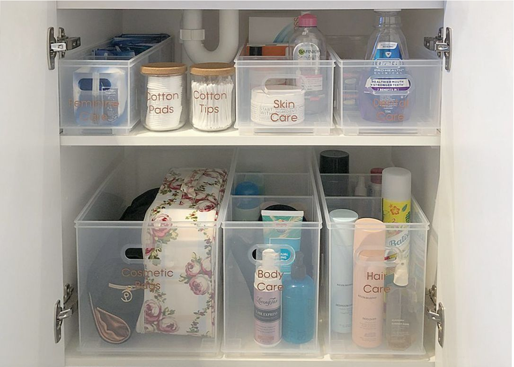

Ways to Organize Your Bathroom
It's time to declutter your bathroom once and for all. After all, how many times do you want to knock over your inconveniently-placed Q-tips in an attempt to rummage around for your hairspray? Save your sanity in the morning and pay attention here. These best bathroom organization ideas will get your washroom tidy in no time, from fresh rack and shelving ideas to drawer organizers and more. Yes, it's possible to maximize your space no matter what size room you're dealing with—we have lots of great storage ideas for small bathrooms right here. (And if you're inspired by this, check out more home organization ideas!)
 